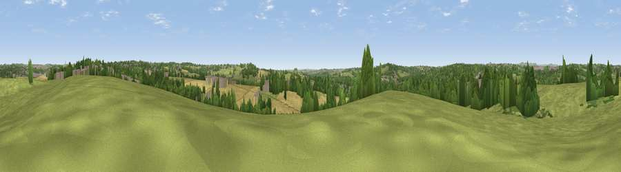

Viewpoint near Pye Bridge
#31322 in England · top 51% of its area beats it · near Pye BridgeWhere it is
The exact computed spot (SK 45075 52725). Click the marker for map links.
The view, rendered

A 360° render of this exact spot computed from the terrain model, tree cover and land cover — summer colours, afternoon light, calibrated against photographs of famous viewpoints. Real trees, hedges and buildings will differ in detail.
The panorama
Grey silhouette: terrain skyline in each direction (720 bearings, Earth curvature and refraction included). Dashed green: skyline with trees (+15 m) and buildings (+8 m) as obstacles. Blue strip: how far the ground is visible on each bearing.
Where the view opens
Wedge length = distance to the farthest visible ground on that bearing (vegetation-aware). Rings at 10, 25 and 50 km.
What fills the view
51% grassland · 21% woodland · 16% cropland · 12% built-up
Angular shares of the visible panorama (visual magnitude), not map area. Landscape diversity 0.53 (0–1 Shannon).
Key numbers
More beautiful places nearby
The staircase of upgrades: each row has a higher view potential than everything closer. Driving times are estimates from straight-line distance, calibrated against real road routing — check an actual route before setting out.
| Place | Direction | Drive | Score |
|---|---|---|---|
| Viewpoint near Codnor Park | SW · 3 km | ~7 min | 45.1 |
| Viewpoint near Nuncargate | ENE · 5 km | ~11 min | 45.8 |
| Viewpoint near Greasley | SE · 6 km | ~13 min | 56.2 |
| Viewpoint near Boothgate | WSW · 10 km | ~19 min | 59.4 |
| The Tors | W · 10 km | ~20 min | 68.9 |
| Crich Stand | WNW · 11 km | ~21 min | 73.0 |
| Alport Height | W · 15 km | ~26 min | 73.9 |
| Tissington Hill | W · 30 km | ~47 min | 75.5 |
53.06987, -1.32873 · source: screening · position refined by local search. Computed location — check access rights before visiting.